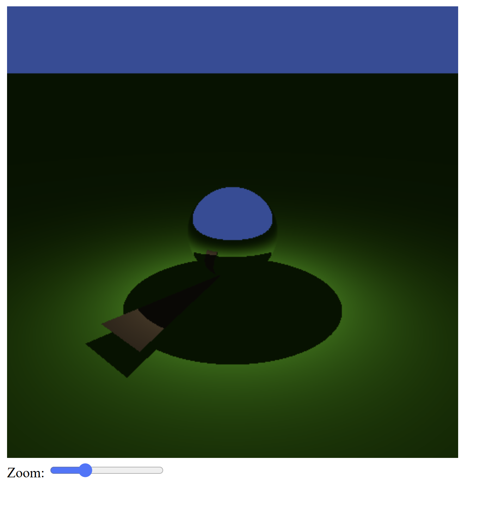
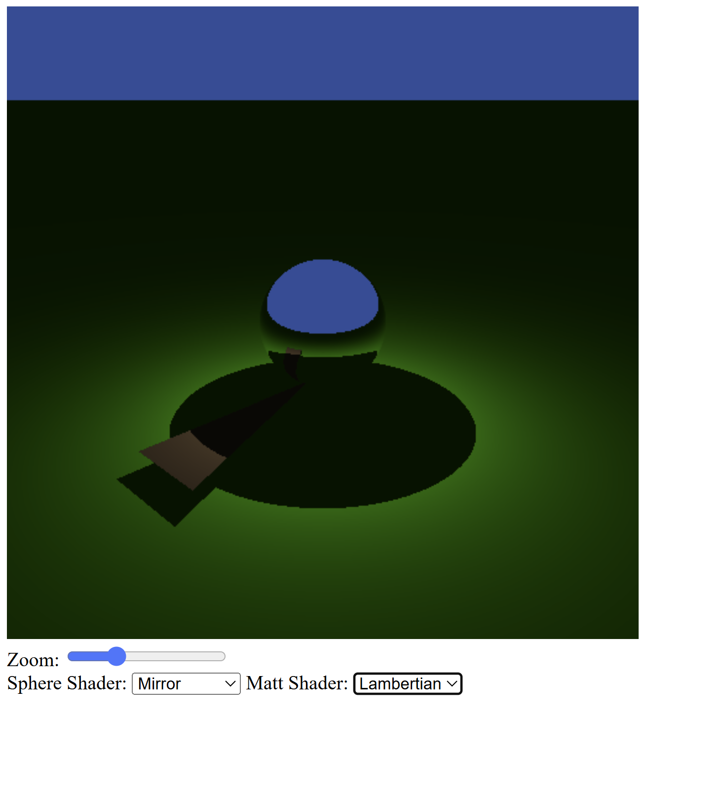
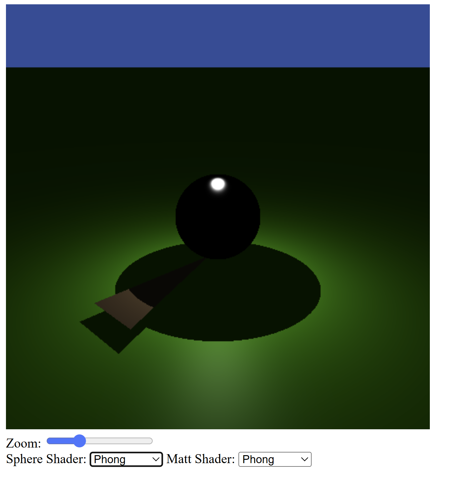
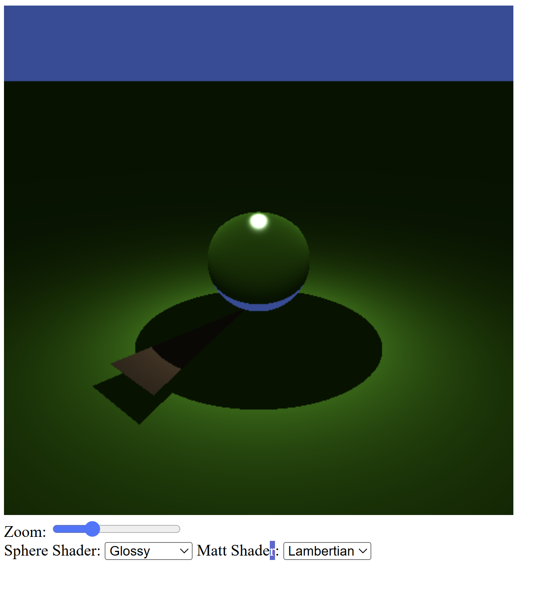

Exercise 1 — Hard shadows
In this exercise, I extended the ray tracer to support hard shadows. A shadow ray is generated from the surface hit point toward the point light.
If the shadow ray intersects another object before reaching the light, the surface is considered to be in shadow and only the ambient component is returned. Otherwise, diffuse illumination is computed using Lambert’s cosine law and inverse square falloff.
To support this, the Light struct was extended to include the
distance to the light source, and a single shade function was used
for all materials.
Source code: GitHub – Worksheet 2 / Exercise 1
Exercise 2 — Mirror reflection
This exercise adds a mirror reflection shader. When a ray hits a mirror surface, a new ray is generated in the reflected direction and traced recursively.
A ray tracing loop was introduced, allowing rays to continue bouncing
as long as the shader requests it through a flag stored in the HitInfo struct.
The sphere in the default scene is rendered as a perfect mirror.
An HTML selection menu was added to switch between different shaders at runtime, including a base color shader for debugging.
Source code: GitHub – Worksheet 2 / Exercise 2
Exercise 3 — Refraction
In this exercise, refraction was implemented to simulate a glass material. The sphere is rendered as a refractive object with an index of refraction n = 1.5.
The shader determines whether a ray enters or exits the object by checking
the sign of the dot product between the ray direction and the surface normal.
The relative index of refraction is stored in the HitInfo struct.
Snell’s law is used to compute the refracted ray direction, and total internal reflection is handled when refraction is not possible.
Source code: GitHub – Worksheet 2 / Exercise 3
Exercise 4 — Phong illumination
This exercise introduces the Phong illumination model to simulate glossy specular highlights.
A new shader option was added that computes both diffuse and specular reflection. The sphere uses a specular reflectance ρs = (0.1, 0.1, 0.1) and a shininess exponent s = 42.
The reflected light from the point light is approximated using the half-vector formulation of the Phong model, allowing visible highlights even though the light source has no physical size.
Source code: GitHub – Worksheet 2 / Exercise 4
Exercise 5 — Glossy material
The final exercise combines Phong illumination with refraction to create a glossy glass material.
The glossy shader blends specular highlights with refracted rays,
producing a more realistic appearance.
All scene description data (objects, materials, shaders)
is handled inside a single intersect_scene function.
This ensures that the intersection and shading functions remain generic and reusable for different scenes and materials.
Source code: GitHub – Worksheet 2 / Exercise 5